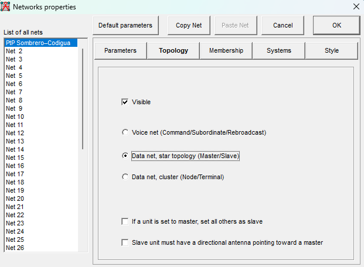

Capítulo 02 · Módulo 04
Topología: una estrella Master/Slave.
Definir la organización de la red antes de asignar el rol de cada sitio.
La topología que usaremos
Siguiendo la recomendación del profesor, en los ejemplos del taller trabajaremos con Data net, star topology (Master/Slave). Esta opción organiza la red de datos alrededor de una unidad Master, con la que se comunican las unidades Slave.
En nuestro enlace Cerro Sombrero–Codigua hay solamente dos sitios: usaremos un Master y un Slave. Es el caso más sencillo de esta organización; sigue siendo un enlace punto a punto.
- Master
Un extremo del enlace - Slave
El otro extremo
Ambos extremos transmiten y reciben datos. Los nombres Master y Slave describen sus roles dentro de la organización del enlace. En Membership asignaremos Cerro Sombrero como Master y Codigua como Slave.
Configurar la topología
- Abre Networks properties y selecciona la red PtP Sombrero–Codigua en la lista izquierda.
- Entra en Topology y deja marcada la casilla Visible.
- Selecciona Data net, star topology (Master/Slave), tal como se ve en la captura.
- Conserva las dos casillas inferiores desmarcadas para reproducir este escenario. Asignaremos y comprobaremos los roles en Membership.

Qué significa cada selección
| Opción | Estado del caso | Para qué sirve |
|---|---|---|
| Visible | Activada | Permite mostrar la red en el mapa de trabajo; no modifica por sí sola la señal recibida. |
| Data net, star topology (Master/Slave) | Seleccionada | Define una red de datos con un Master y sus Slave. En este caso habrá uno de cada rol. |
| If a unit is set to master, set all others as slave | Desmarcada | Si se activa, al asignar una unidad como Master, las demás pasan automáticamente a Slave. Aquí revisaremos los roles de cada sitio de forma explícita. |
| Slave unit must have a directional antenna pointing toward a master | Desmarcada | Añade una condición en el programa sobre la antena direccional del Slave y su orientación hacia un Master. Conservamos el estado de la captura. |
Aunque la última casilla esté desmarcada, nuestro diseño sigue contemplando antenas direccionales orientadas entre los dos extremos. El tipo de antena, su ganancia, patrón y orientación se comprobarán con sus fichas y con la configuración del sistema.
Cómo entender la estrella
Si hubiera varios Slave, sus enlaces directos serían con el Master dentro de esta topología. Para este taller basta con el par de sitios del caso; no necesitamos añadir más unidades para utilizar esta opción.
Continuar con Systems
La topología ya queda definida. Ahora prepararemos los perfiles de radio y antena en Systems. Después, Membership permitirá incluir los sitios en la red, asignar sus roles y seleccionar sus sistemas. Para este caso se definió Cerro Sombrero como Master y Codigua como Slave; lo configuraremos en Membership después de preparar Systems.
Comprueba que Visible y la topología coincidan con la captura. Si sales de la ventana, confirma los cambios con OK y conserva el proyecto. Continúa con Systems: perfiles de equipo.
Consulta técnica: topologías de Radio Mobile.